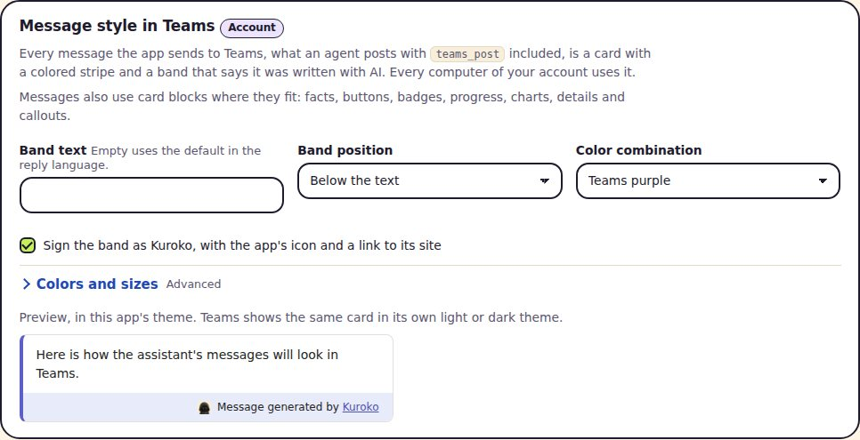
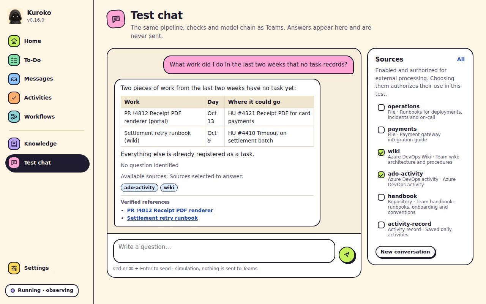
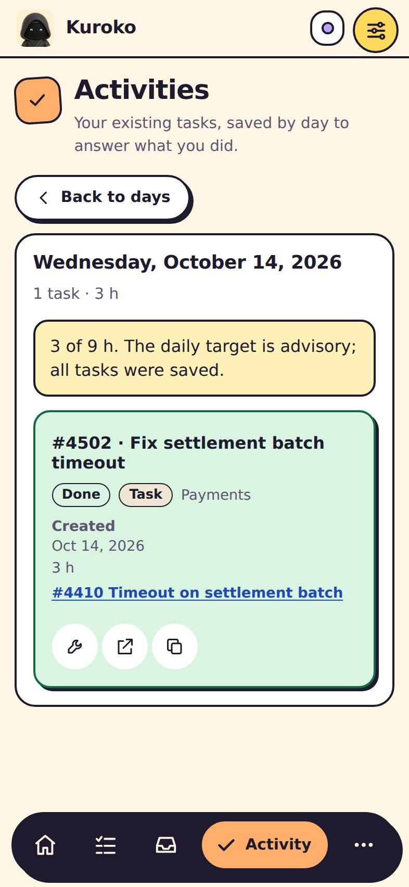
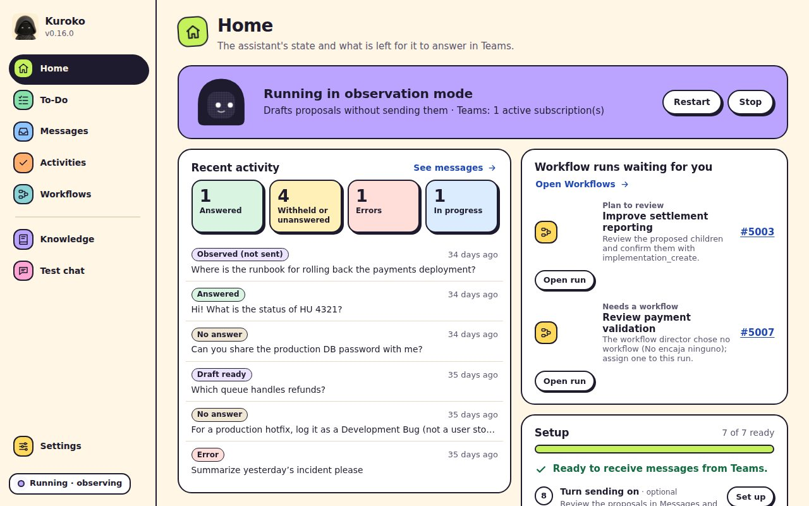
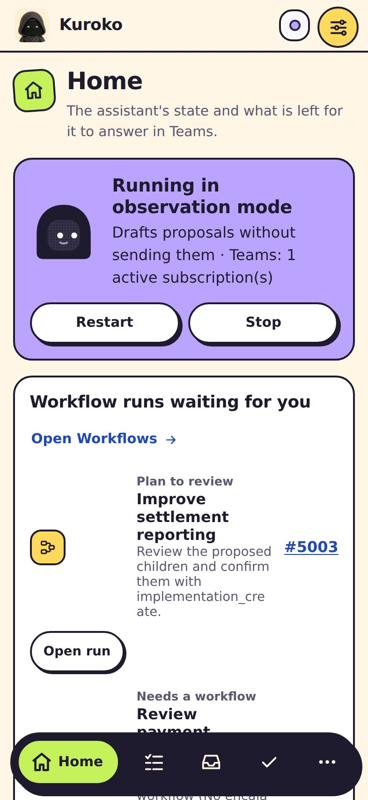

The pta CLI
Every operation from the terminal, with stable JSON output (--json) and every command described in pta help.
Your personal assistant for Microsoft Teams
Kuroko answers in Teams as you, keeps a daily record of your Azure DevOps tasks and implements your work items with coding agents on your own computers. Only with what you authorize, and with code checking every step.
Open source (MIT) · Self-hosted · macOS, Windows and Linux · Replies in English or Spanish
As you, not a botdelegated Microsoft sign-in with PKCE
4 permissionsthe Microsoft Graph minimum, no new scopes
0 retrieswhen sending to Teams: when in doubt, you review
Read-onlydaily activity records never change your tasks
In kabuki theatre, kuroko are the stagehands dressed in black who move the props and help the actor in plain sight. By convention, the audience treats them as invisible. Kuroko does the same for you: it answers your messages, keeps your records and moves your work forward behind the scenes, so you stay on stage.
Act 1 · Microsoft Teams
When someone writes to you directly, mentions you in a group or asks in your personal chat, Kuroko reads only the sources open to that conversation, writes with the models you choose (Codex, Claude Code, OpenCode 2 or DeepSeek, in your order, with fallback) and replies as you.
User.Read, Chat.Read, ChatMessage.Send and offline_access.
Act 2 · Activity records
Activities saves your existing Azure DevOps tasks by day, on a schedule or when you ask, with verified links, descriptions, their HU and the hours against your daily target. “What did I do yesterday?” is then answered from that record.
pta activity history.

Act 3 · Implementation and workflows
From To-Do or a work item, Implement picks one of your computers, its directories and an installed coding agent (Codex, Claude Code or OpenCode) with its model and effort. HUs, bugs and GitHub epics get a plan of children that you review, edit and confirm before anything is created; tasks and issues go straight to coding.
Coding runs are autonomous, with full permissions on the computer you choose: that trusted machine and its allowed directories are the boundary.
Act 4 · Knowledge
Sources are what Kuroko may read: files and whole repositories, exact URLs, Azure DevOps activity and Wiki, your verified notes, the activity record, your own Teams messages and your recent coding-agent sessions. Each one starts disabled, with no audience, and you choose the conversations that may use it.
Act 5 · Machines
Connect the computers you own, on macOS, Windows or Linux: copy one command from your portal, run it and choose Trust this machine in the browser. Your account's configuration follows you; folders, credentials and sign-ins stay on each computer.


Act 6 · Security and privacy
A private installation you control: your accounts, your credentials, your computers. Models propose; code decides what can be read, cited and sent.
You configure Cloudflare Access, TLS, SSH keys and a firewall for your host. Profiles share your OS account, and coding agents are not isolated from it. The security policy tracks these limits.
Backstage
Everything the app does is also a command and a tool, so your own agents can work the stage too.
pta CLIEvery operation from the terminal, with stable JSON output (--json) and every command described in pta help.
pta mcp serves the app's tools to Claude Code, Codex or any MCP client; your portal also serves them at /mcp for agents with nothing installed. Actions outside the app ask you first.
The operating manual for agents ships inside the binary: pta skill show.
# what is running, as JSON
pta status --json
# the activity record of a range of days
pta activity history 2026-10-01..2026-10-15
# add the MCP server to Claude Code
claude mcp add --scope user personal-teams-assistant -- pta mcpKuroko is the Personal Teams Assistant: one package, personal-teams-assistant on crates.io, installs the host with its web interface and the pta CLI. Self-hosted: you bring the accounts, credentials and hosting, and your profile carries over between versions.
Copy it from your portal (Settings › Machines › Connect this computer). It checks the release archive's SHA-256, installs for your user and starts the host at login. Without --origin it only installs.
# macOS and Linux
curl --proto '=https' --tlsv1.2 -fsSL \
https://github.com/elvisbrevi/personal-teams-assistant/releases/latest/download/install.sh \
| sh -s -- --origin https://your-portal.example
# Windows: install.ps1 from the same release, in PowerShellcargo binstall downloads the prebuilt release in seconds; cargo install compiles it. The same build on macOS, Windows and Linux.
cargo binstall personal-teams-assistant
# or compiled here
cargo install personal-teams-assistant --locked
personal-teams-assistant # opens it in your browserThe same install, run in the foreground as a service and operated with pta or the portal.
personal-teams-assistant --start
# fits a systemd serviceSave your provider credentials, choose the reply language and model order, and register your own Entra app. Home tells you what's missing.
pta statusSign in with your Microsoft account and give the host a stable HTTPS address, for example your own Cloudflare Tunnel.
pta auth microsoft loginAuthorize your sources, start the assistant and review its drafts without sending anything.
pta startOnce you trust the drafts, turn off observation mode.
pta mode activeTo receive messages, the machine that answers Teams must be on and reachable at a public HTTPS address. Don't run two active instances for the same account.
Nothing is sent until you decide. Kuroko waits in the wings.
cargo install personal-teams-assistant --locked